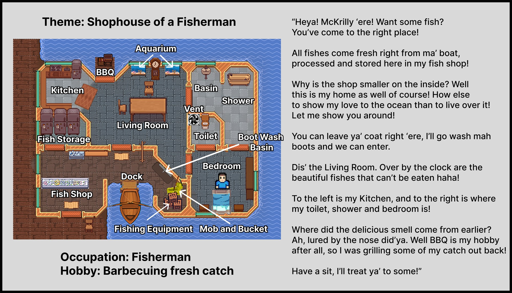
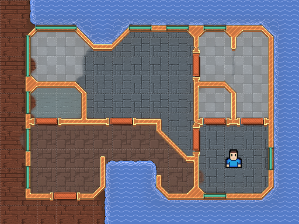
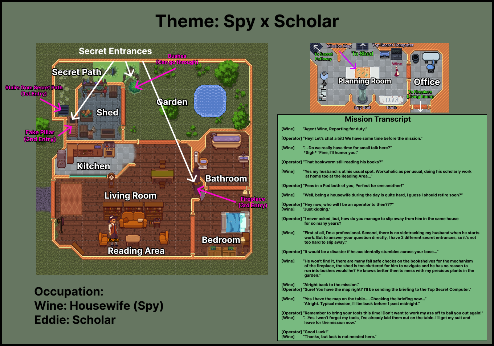
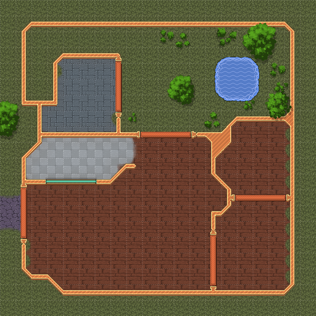
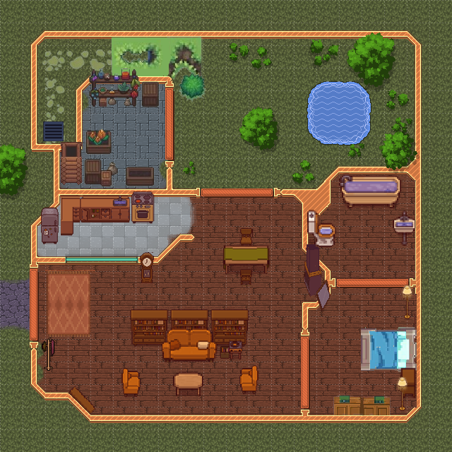
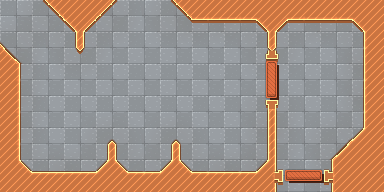
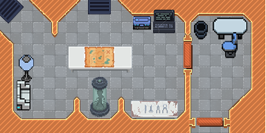

<div id="ajax-page" class="ajax-page-content">
    <div class="ajax-page-wrapper">
        <div class="ajax-page-nav">
            <div class="nav-item ajax-page-prev-next">
                <a class="ajax-page-load" href="project-one-way-out.html"><i class="lnr lnr-chevron-left"></i></a>
                <a class="ajax-page-load" href="project-4koma.html"><i class="lnr lnr-chevron-right"></i></a>
            </div>
            <div class="nav-item ajax-page-close-button">
                <a id="ajax-page-close-button" href="#"><i class="lnr lnr-cross"></i></a>
            </div>
        </div>

        <div class="ajax-page-title">
            <h1>Work From Home</h1>
            <p class="ajax-page-subtitle">WFH 1: Shophouse of a Fisherman | WFH 2: Spy x Scholar</p>
        </div>

        <div class="row">
            <div class="col-sm-8 col-md-8 portfolio-block">
                <div class="owl-carousel portfolio-page-carousel">
                    <div class="item">
                        <a class="lightbox" href="img/portfolio/wfh/wfh1-annotated.jpg" title="Annotated Version of the WFH 1 Map"></a>
                        <p class="portfolio-page-caption">Annotated Version of the WFH 1 Map</p>
                    </div>
                    <div class="item">
                        <a class="lightbox" href="img/portfolio/wfh/wfh_1_pre.png" title="WFH 1 (Pre)"></a>
                        <p class="portfolio-page-caption">WFH 1 (Pre)</p>
                    </div>
                    <div class="item">
                        <a class="lightbox" href="img/portfolio/wfh/wfh_1_post.png" title="WFH 1 (Post)"></a>
                        <p class="portfolio-page-caption">WFH 1 (Post)</p>
                    </div>
                    <div class="item">
                        <a class="lightbox" href="img/portfolio/wfh/wfh2-annotated.png" title="Annotated Version of the WFH 2 Map"></a>
                        <p class="portfolio-page-caption">Annotated Version of the WFH 2 Map</p>
                    </div>
                    <div class="item">
                        <a class="lightbox" href="img/portfolio/wfh/wfh_2_1_pre.png" title="WFH 2, House (Pre)"></a>
                        <p class="portfolio-page-caption">WFH 2, House (Pre)</p>
                    </div>
                    <div class="item">
                        <a class="lightbox" href="img/portfolio/wfh/wfh_2_1_post.png" title="WFH 2, House (Post)"></a>
                        <p class="portfolio-page-caption">WFH 2, House (Post)</p>
                    </div>
                    <div class="item">
                        <a class="lightbox" href="img/portfolio/wfh/wfh_2_2_pre.png" title="WFH 2, Planning Room (Pre)"></a>
                        <p class="portfolio-page-caption">WFH 2, Planning Room (Pre)</p>
                    </div>
                    <div class="item">
                        <a class="lightbox" href="img/portfolio/wfh/wfh_2_2_post.png" title="WFH 2, Planning Room (Post)"></a>
                        <p class="portfolio-page-caption">WFH 2, Planning Room (Post)</p>
                    </div>
                </div>

                <script type="text/javascript">
                    jQuery(document).ready(function($){
                        $('.portfolio-page-carousel').imagesLoaded(function(){
                            $('.portfolio-page-carousel').owlCarousel({
                                smartSpeed:1200,
                                items: 1,
                                loop: false,
                                dots: true,
                                nav: true,
                                navText: false,
                                margin: 10,
                                autoHeight:true
                            });
                        });
                    });
                </script>

                <!-- About the Project -->
                <div class="project-overview">
                    <div class="block-title">
                        <h3>About the Project</h3>
                    </div>
                    <p class="text-justify"><strong>WFH 1: Shophouse of a Fisherman</strong></p>
                    <p class="text-justify">Looking at the map, it is quickly understood that this is the home of a fisherman. It may look unimpressive to some, normal to others. That is, in fact, mission accomplished.</p>
                    <p class="text-justify">The goal was to make something believable. I considered what the most interesting depiction of a unique house is. The answer: Vietnam's floating homes. From there, I thought, people who live in such places would be hard-pressed to get food as we do, meaning they'd likely rely on fishing. From there, I recalled that there was a unique home from Stardew Valley, Willy's Home. He had a boat in the back, but the layout and facilities of his home never quite made sense to me. Therefore, I made it my goal to make a more believable version of Willy's Home.</p>
                    <p class="text-justify"><strong>WFH 2: Spy x Scholar</strong></p>
                    <p class="text-justify">Occupation: Wine, Housewife (Spy). Eddie, Scholar.</p>
                    <p class="text-justify"><em>[Wine] "First of all, I'm a professional. Second, there is no sidetracking my husband when he starts work. But to answer your question directly, I have 3 different secret entrances, so it's not too hard to slip away."</em></p>
                </div>
            </div>

            <div class="col-sm-4 col-md-4 portfolio-block">
                <!-- Project Info -->
                <div class="project-description">
                    <div class="block-title">
                        <h3>Project Info</h3>
                    </div>
                    <ul class="project-general-info">
                        <li><p><i class="fa fa-gamepad"></i> Top-down home layouts</p></li>
                        <li><p><i class="fa fa-user"></i> Level design</p></li>
                        <li><p><i class="fa fa-university"></i> DigiPen Bilbao</p></li>
                    </ul>

                    <div class="tags-block">
                        <div class="block-title">
                            <h3>Skills &amp; Tools</h3>
                        </div>
                        <ul class="tags">
                            <li><a>Level Design</a></li>
                            <li><a>Believable Spaces</a></li>
                            <li><a>Environmental Storytelling</a></li>
                            <li><a>Iteration</a></li>
                        </ul>
                    </div>
                </div>
                <!-- /Project Info -->
            </div>
        </div>
    </div>
</div>